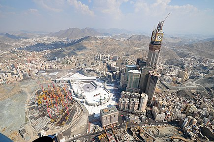

the city off the holy mosque:
Mecca, officially Makkah al-Mukarramah (Arabic: مكة المكرمة, romanized: Makkat al-Mukarramah, lit. 'Makkah the Noble') and commonly shortened to Makkah,[a] is the holiest city in Islam and the capital of the Makkah Province of Saudi Arabia.[2] The city
is 70 km (43 mi) inland from Jeddah on the Red Sea, in a narrow valley 277 m (909 ft) above sea level. Its last recorded population was 1,578,722 in 2015.[3] The estimated metro population in 2020 is 2.042 million, making it the third-most
populated city in the kingdom. Pilgrims more than triple this number every year during the Ḥajj pilgrimage, observed in the twelfth Hijri month of Dhūl-Ḥijjah.

Mecca is the birthplace of Muhammad. The Hira cave atop the Jabal al-Nur ("Mountain of Light") is just outside the city and is where Muslims believe the Qur'an was first revealed to Muhammad.[4] Visiting Mecca for the Hajj is an obligation upon all able
Muslims. The Great Mosque of Mecca, known as the Masjid al-Haram, is home to the Ka'bah, believed by Muslims to have been built by Abraham and Ishmael, is one of Islam's holiest sites and the direction of prayer for all Muslims (qibla), cementing
Mecca's significance in Islam.[5]